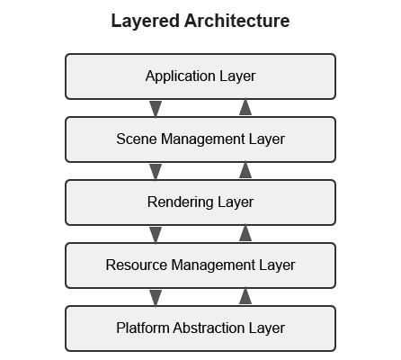
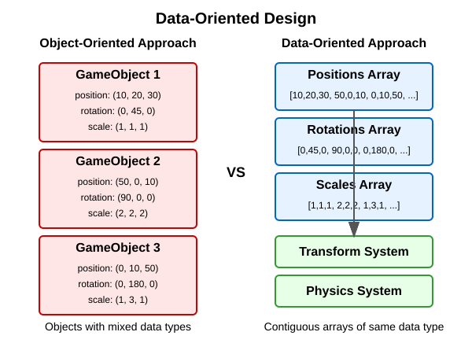
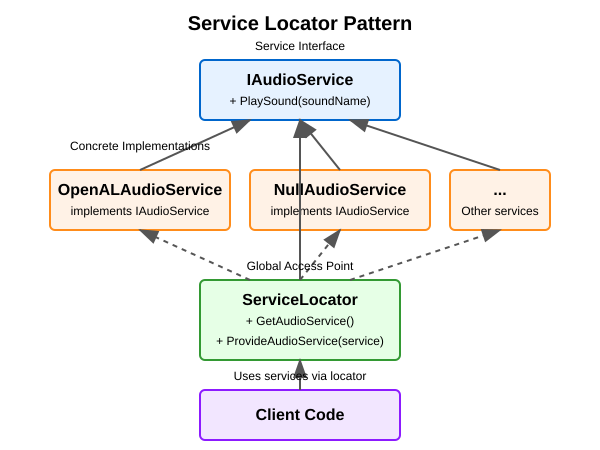
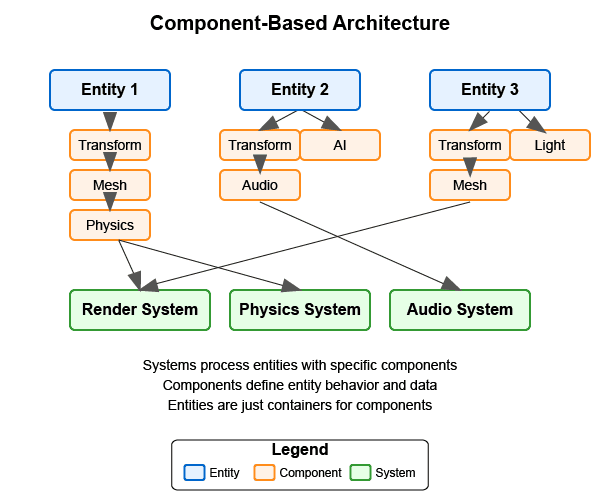

Engine Architecture: Architectural Patterns
Architectural Patterns
In this section, we’ll provide a quick overview of common architectural patterns used in modern rendering and game engines, with a focus on Component-Based Architecture which forms the foundation of our Vulkan rendering engine.
Before diving into specific patterns, it’s important to clarify that while we’re building a Vulkan-based rendering engine in this tutorial, many of the architectural patterns we’ll discuss are commonly used in both rendering engines and full game engines. A rendering engine focuses primarily on graphics rendering capabilities, while a full game engine typically includes additional systems like physics, audio, AI, and gameplay logic.
Overview of Common Architectural Patterns
Here’s a brief introduction to the most common architectural patterns used in game and rendering engines:
Layered Architecture
Layered architecture divides the system into distinct layers, each with a specific responsibility. Typical layers include platform abstraction, resource management, rendering, scene management, and application layers.

Key Benefits:
-
Clear separation of concerns
-
Easier to understand and maintain
-
Can replace or modify individual layers without affecting others
For detailed information and implementation examples, see the Appendix: Layered Architecture.
Data-Oriented Design
Data-Oriented Design (DOD) focuses on organizing data for efficient processing rather than organizing code around objects. It emphasizes cache-friendly memory layouts and bulk processing of data.

Key Benefits:
-
Better cache utilization
-
More efficient memory usage
-
Easier to parallelize
For detailed information and implementation examples, see the Appendix: Data-Oriented Design.
Service Locator Pattern
The Service Locator pattern provides a global point of access to services without coupling consumers to concrete implementations.

Key Benefits:
-
Decouples service consumers from service providers
-
Allows for easy service replacement
-
Facilitates testing with mock services
For detailed information and implementation examples, see the Appendix: Service Locator Pattern.
Component-Based Architecture
Component-based architecture is widely used in modern game engines and forms the foundation of our Vulkan rendering engine. It promotes composition over inheritance and allows for more flexible entity design.

|
Diagram Legend:
|
Key Concepts
-
Entities - Basic containers that represent objects in the game world.
-
Components - Modular pieces of functionality that can be attached to entities.
-
Systems - Process entities with specific components to implement game logic.
Benefits of Component-Based Architecture
-
Highly modular and flexible
-
Avoids deep inheritance hierarchies
-
Enables data-oriented design
-
Facilitates parallel processing
Implementation Example
// Component base class
class Component {
public:
virtual ~Component() = default;
virtual void Update(float deltaTime) {}
};
// Specific component types
class TransformComponent : public Component {
private:
glm::vec3 position;
glm::quat rotation;
glm::vec3 scale;
public:
// Methods to manipulate transform
};
class MeshComponent : public Component {
private:
Mesh* mesh;
Material* material;
public:
// Methods to render the mesh
};
// Entity class
class Entity {
private:
std::vector<std::unique_ptr<Component>> components;
public:
template<typename T, typename... Args>
T* AddComponent(Args&&... args) {
static_assert(std::is_base_of<Component, T>::value, "T must derive from Component");
auto component = std::make_unique<T>(std::forward<Args>(args)...);
T* componentPtr = component.get();
components.push_back(std::move(component));
return componentPtr;
}
template<typename T>
T* GetComponent() {
for (auto& component : components) {
if (T* result = dynamic_cast<T*>(component.get())) {
return result;
}
}
return nullptr;
}
void Update(float deltaTime) {
for (auto& component : components) {
component->Update(deltaTime);
}
}
};Why We’re Focusing on Component Systems
For our Vulkan rendering engine, we’ve chosen to focus on component-based architecture for several key reasons:
-
Flexibility for Graphics Features: Component systems allow us to easily add, remove, or swap rendering features (like different shading models, post-processing effects, or lighting techniques) without major refactoring.
-
Separation of Rendering Concerns: Components naturally separate different aspects of rendering (geometry, materials, lighting, cameras) into manageable, reusable pieces.
-
Industry Standard: Most modern rendering engines and graphics frameworks use component-based approaches because they provide the right balance of flexibility, maintainability, and performance.
-
Extensibility: As graphics technology evolves rapidly, component systems make it easier to incorporate new Vulkan features or rendering techniques.
-
Compatibility with Data-Oriented Optimizations: While we’re using a component-based approach, we can still apply data-oriented design principles within our components for performance-critical rendering paths.
While other architectural patterns have their merits, component-based architecture provides the best foundation for a modern, flexible rendering engine. That said, we’ll incorporate aspects of other patterns where appropriate - using layered architecture for our overall engine structure, data-oriented design for performance-critical systems, and service locators for cross-cutting concerns.
Conclusion
We’ve provided a brief overview of common architectural patterns, with a focus on Component-Based Architecture which we’ll use throughout this tutorial. For more detailed information about other architectural patterns, including implementation examples and comparative analysis, see the Appendix: Detailed Architectural Patterns.
In the next section, we’ll dive deeper into component systems and how to implement them effectively in your engine.